注记Work-in-progress 🚧
You are reading the work-in-progress first edition of Causal Inference in R. This chapter has its foundations written but is still undergoing changes.
Evaluating your propensity score model · 原书逐章中译
来源：Malcolm Barrett、Lucy D’Agostino McGowan、Travis Gerke，Causal Inference in R · Evaluating your propensity score model。 本页为中文翻译；原书代码块、公式、图表交叉引用和引用键均按原文保留。统计图在网页渲染时由 R 代码生成，静态插图直接引用原文件。 原书仓库采用 CC BY-NC-SA 4.0；代码采用 MIT 许可。请遵守原许可证并注明作者。
You are reading the work-in-progress first edition of Causal Inference in R. This chapter has its foundations written but is still undergoing changes.
我们永远无法知道所拟合的倾向评分模型是否正确指定了混杂因子。 然而，倾向评分本质上是一种平衡评分。 这意味着，如果我们对倾向评分进行条件化，暴露组之间的混杂因子分布应当相似。 本章将讨论如何评估倾向评分的实际含义，以诊断倾向评分模型可能存在的问题。
首先，让我们重新回顾倾向评分在模型层面的一些含义。 在 倾向评分 中，我们考察了暴露组之间倾向评分的镜像分布。 加权后，我们应当看到两组之间有更大的重叠，分布也更加相似。 下面使用与 使用倾向评分 相同的数据来看一个例子。
library(broom)
library(touringplans)
library(propensity)
library(halfmoon)
seven_dwarfs_9 <- seven_dwarfs_train_2018 |> filter(wait_hour == 9)
seven_dwarfs_9_with_ps <-
glm(
park_extra_magic_morning ~
park_ticket_season + park_close + park_temperature_high,
data = seven_dwarfs_9,
family = binomial()
) |>
augment(type.predict = "response", data = seven_dwarfs_9)
seven_dwarfs_9_with_wt <- seven_dwarfs_9_with_ps |>
mutate(
w_ate = wt_ate(.fitted, park_extra_magic_morning),
park_extra_magic_morning = factor(park_extra_magic_morning)
)一旦得到权重，就可以将它们传入 geom_mirror_histogram() 的 weight 参数，以可视化倾向评分的加权分布，如 图 63.1 所示。
ggplot(
seven_dwarfs_9_with_wt,
aes(.fitted, group = park_extra_magic_morning)
) +
geom_mirror_histogram(
aes(fill = factor(park_extra_magic_morning), weight = w_ate)
) +
scale_y_continuous(labels = abs) +
labs(
x = "propensity score",
fill = "Extra Magic Morning"
)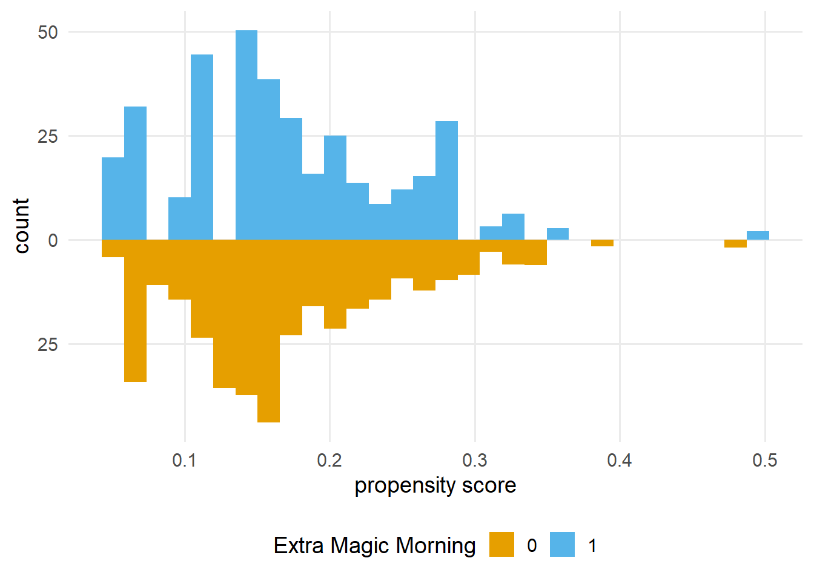
我们也可能希望并排查看加权和未加权分布，如 图 63.2 所示。 使用 plot_mirror_distributions() 可以加快数据整理和绘图。
seven_dwarfs_9_with_wt |>
plot_mirror_distributions(
.exposure = park_extra_magic_morning,
.var = .fitted,
.weights = w_ate
) +
labs(fill = "extra magic morning")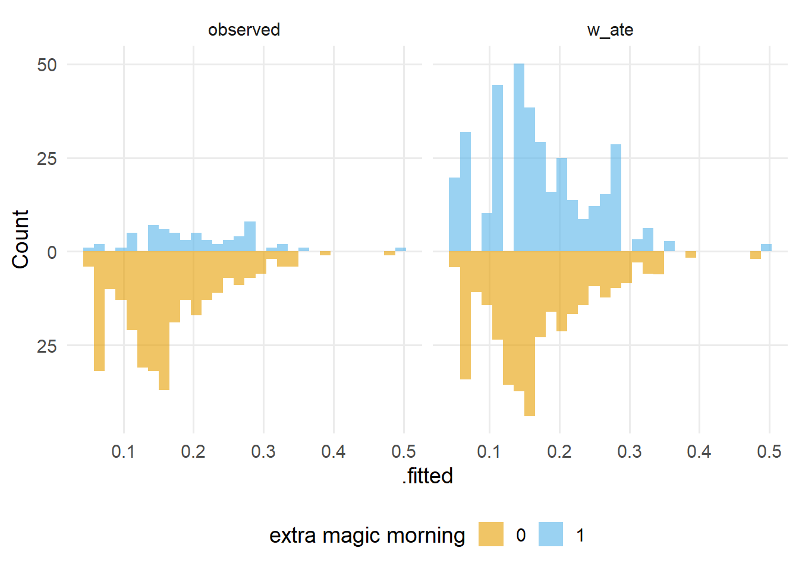
我们还考察了倾向评分模型的 ROC 曲线和 AUC。 这有助于理解模型的区分能力和潜在的正值性问题，但区分能力还隐藏着另一层含义：在随机试验中，AUC 应约为 0.5——除了随机化本身，没有任何因素可以区分处理组。 同样，如果我们对 ROC 曲线和 AUC 的计算进行加权，也希望看到相同的性质。 事实上，在 图 63.3 中，加权 ROC 曲线沿着 45 度线绘制。 在预测模型中，这会是不好的结果。 然而，在因果模型中，这意味着给定纳入的混杂因子，加权后无法区分两组。
seven_dwarfs_9_with_wt |>
check_model_roc_curve(
park_extra_magic_morning,
.fitted,
.weights = w_ate
) |>
plot_model_roc_curve()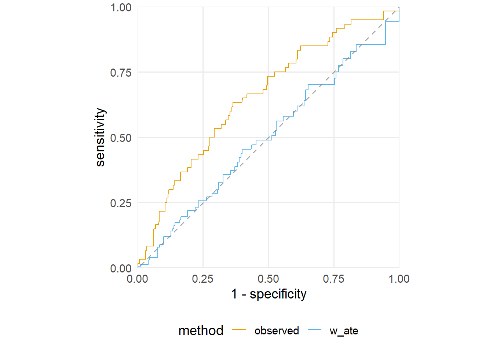
我们的模型 AUC 现在为 0.50：
check_model_auc(
seven_dwarfs_9_with_wt,
.exposure = park_extra_magic_morning,
.fitted = .fitted,
.weights = w_ate
)# A tibble: 2 x 2
method auc
<chr> <dbl>
1 observed 0.654
2 w_ate 0.499倾向评分权重相对于匹配的一项优势是统计效率：当某些个体没有匹配对象时，匹配会非常明显地减少样本量。 不过，权重也会给样本引入变异，因此其精度仍低于总样本的精度。 虽然对权重求和是一项有价值的诊断，但更直观的指标是有效样本量（ESS）。 使用倾向评分权重时，ESS 表示加权后近似的独立观测数——也就是在实际样本中，为了获得与加权总体大致相同的精度所需要的个体数——。 ESS 的公式为：
\[ ESS = \frac{(\sum_{i=1}^{n} w_i)^2}{\sum_{i=1}^{n} w_i^2} \]
其中，\(w_i\) 表示观测 \(i\) 的权重。 当所有权重都等于 1 时，例如未加权、未匹配的总体，ESS 等于原始样本量。 通过倾向评分分配权重时，我们引入了变异；权重的变异越大，预期 ESS 越低。 我们将在 ?sec-estimands 中看到更多类型的权重，也会讨论如何使用 ESS 在不同加权方案之间进行选择，但现在先来看 ATE 权重的 ESS。 加权样本将提供相当于 160 天样本的精度，约为原始样本量的 46%。
library(scales)
seven_dwarfs_9_with_wt |>
summarize(
n = n(),
ess_ate = ess(w_ate),
percent_ess_ate = percent(ess_ate / n)
)# A tibble: 1 x 3
n ess_ate percent_ess_ate
<int> <dbl> <chr>
1 354 160. 45% 按暴露组查看 ESS 也很有启发性（注意，我们不期望分组 ESS 的总和等于总 ESS；ESS 衡量的是在权重变异下的效率，而这种变异在这三种计算中的表现不同）。 我们看到，没有 Extra Magic Morning 的日期保留了大部分样本量，说明权重变异较小。 有 Extra Magic Morning 的日期 ESS 降幅更大。 因此，权重的变异主要来自暴露日期。
seven_dwarfs_9_with_wt |>
group_by(park_extra_magic_morning) |>
summarize(
n = n(),
ess_ate = ess(w_ate),
percent_ess_ate = percent(ess_ate / n)
)# A tibble: 2 x 4
park_extra_magic_morn~1 n ess_ate percent_ess_ate
<fct> <int> <dbl> <chr>
1 0 294 291. 99%
2 1 60 46.7 78%
# i abbreviated name: 1: park_extra_magic_morning从权重的分布中可以清楚地看到这一点：
ggplot(
seven_dwarfs_9_with_wt,
aes(x = as.numeric(w_ate), fill = park_extra_magic_morning)
) +
geom_density(color = NA) +
scale_x_log10() +
labs(x = "ATE weight", fill = "Extra Magic Morning")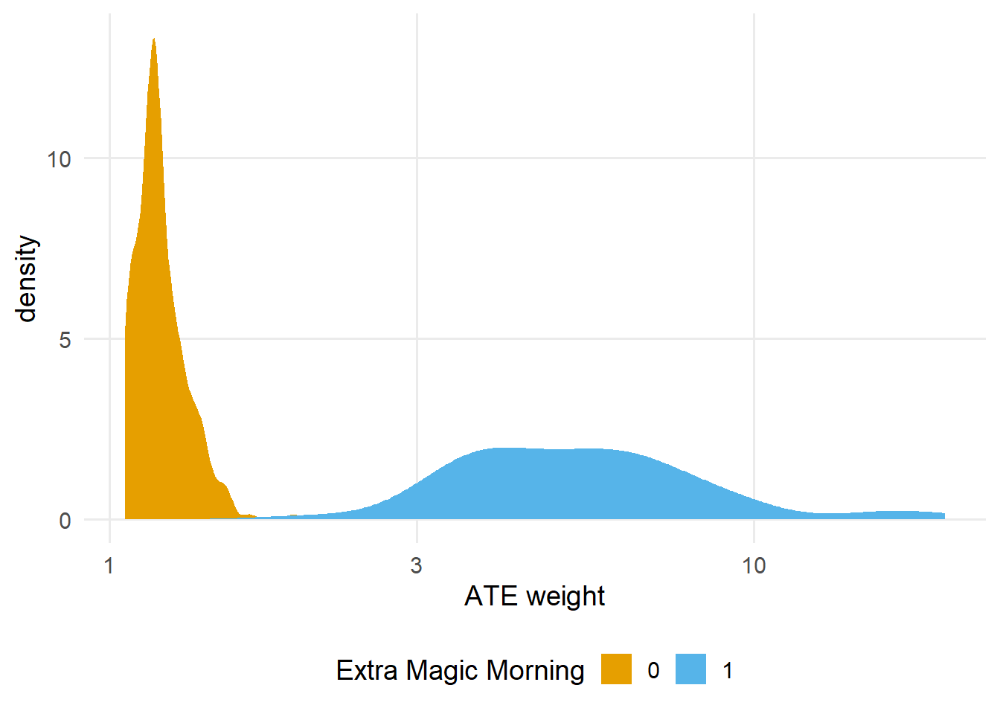
如果发现 ESS 太小，我们有几种选择。 首先，可以使用一组变异更小的权重，我们将在 ?sec-estimands 和 使用基于优化的平衡权重 中讨论这一点。 其次，可以修剪或截断 ATE 权重。 例如，如果将倾向评分截断到较低和较高的百分位数，然后重新计算权重，ESS 会略有改善。 这里的希望是，对权重分布进行轻微修改，在确保我们针对正确的估计目标（平均处理效应）的同时改善精度，从而取得良好平衡。 不过，修剪和截断越多，我们回答的就越可能是关于不同于总体人群的某个人群的问题。
seven_dwarfs_9_with_wt |>
mutate(
trunc_ps = ps_trunc(.fitted, method = "pctl", lower = 0.01, upper = 0.99),
w_ate_trunc = wt_ate(trunc_ps, park_extra_magic_morning)
) |>
summarize(
n = n(),
ess_ate_trunc = ess(w_ate_trunc),
percent_ess_ate = percent(ess_ate_trunc / n)
)# A tibble: 1 x 3
n ess_ate_trunc percent_ess_ate
<int> <dbl> <chr>
1 354 163. 46% 可交换性的一个重要方面是，我们期望各组在混杂因子的各个水平内具有可交换性。 虽然我们无法直接观察这一点，但其结果之一是，我们也期望可交换的组在变量层面达到平衡。 下面来看一些从这一角度评估平衡的其他方法。
一种评估变量层面平衡的常用方法是标准化均值差。 该指标有助于评估各暴露组之间混杂因子平均值是否平衡。 例如，假设有一个连续混杂因子，\(Z\)，且 \(\bar{z}_{exposed} = \frac{\sum Z_i(X_i)}{\sum X_i}\) 是暴露者中 \(Z\) 的均值，\(\bar{z}_{unexposed} = \frac{\sum Z_i(1-X_i)}{\sum 1-X_i}\) 是未暴露者中 \(Z\) 的均值，\(s_{exposed}\) 是暴露者中 \(Z\) 的样本标准差，\(s_{unexposed}\) 是未暴露者中 \(Z\) 的样本标准差，那么标准化均值差可表示为：
\[ d =\frac{\bar{z}_{exposed}-\bar{z}_{unexposued}}{\frac{\sqrt{s^2_{exposed}+s^2_{unexposed}}}{2}} \]
对于二元 \(Z\)（只有两个水平的混杂因子），每组中的样本比例（例如 \(\hat{p}_{exposed}\) 或 \(\hat{p}_{unexposed}\) ）会取代 \(\bar{z}\)，并且 \(s^2=\hat{p}(1-\hat{p})\)。 当 \(Z\) 是包含两个以上类别的分类变量时，\(\bar{z}\) 是组内每个类别水平所占比例组成的向量，分母是多项式协方差矩阵（下文的 \(S\)），因此上式可以更一般地写为：
\[ d = \sqrt{(\bar{z}_{exposed} - \bar{z}_{unexposed})^TS^{-1}(\bar{z}_{exposed} - \bar{z}_{unexposed})} \]
通常，我们会在完整的、未经调整的数据集中计算每个混杂因子的标准化均值差，然后将其与调整后的标准化均值差进行比较。 如果通过匹配纳入倾向评分，调整后的标准化均值差使用上面的确切公式，但将样本限制为那些已匹配的个体。 如果通过加权纳入倾向评分，调整后的标准化均值差会使用构造出的倾向评分对上述各个组成部分进行加权。
在 R 中，{halfmoon} 包提供了 check_balance() 函数，可以为数据集计算该指标和其他平衡指标。
library(halfmoon)
balance_metrics <- check_balance(
df,
.vars = c(confounder_1, confounder_2, ...),
.exposure = exposure,
.weights = wts # weight is optional
)现在，使用 check_balance() 函数，我们可以考察加权前后的标准化均值差。
library(halfmoon)
balance_metrics <-
seven_dwarfs_9_with_wt |>
mutate(park_close = as.numeric(park_close)) |>
check_balance(
.vars = c(park_ticket_season, park_close, park_temperature_high),
.exposure = park_extra_magic_morning,
.weights = w_ate
)
balance_metrics# A tibble: 32 x 5
variable group_level method metric estimate
<chr> <chr> <chr> <chr> <dbl>
1 park_close 0 obser~ ks 0.171
2 park_close 0 w_ate ks 0.139
3 park_close 0 obser~ smd -0.126
4 park_close 0 w_ate smd 0.0566
5 park_close 0 obser~ vr 1.92
6 park_close 0 w_ate vr 1.42
7 park_temperature~ 0 obser~ ks 0.151
8 park_temperature~ 0 w_ate ks 0.148
9 park_temperature~ 0 obser~ smd -0.157
10 park_temperature~ 0 w_ate smd -0.0598
# i 22 more rowscheck_balance() 还会计算其他指标，但目前我们将重点放在标准化均值差上。
smds <- balance_metrics |>
filter(metric == "smd")
smds# A tibble: 10 x 5
variable group_level method metric estimate
<chr> <chr> <chr> <chr> <dbl>
1 park_close 0 obser~ smd -0.126
2 park_close 0 w_ate smd 0.0566
3 park_temperature~ 0 obser~ smd -0.157
4 park_temperature~ 0 w_ate smd -0.0598
5 park_ticket_seas~ 0 obser~ smd 0.222
6 park_ticket_seas~ 0 w_ate smd 0.0158
7 park_ticket_seas~ 0 obser~ smd 0.0926
8 park_ticket_seas~ 0 w_ate smd -0.0406
9 park_ticket_seas~ 0 obser~ smd -0.369
10 park_ticket_seas~ 0 w_ate smd 0.0347例如，从上面可以看到，在纳入倾向评分之前，峰值票价季节的观测标准化均值差为 0.22；然而，纳入倾向评分权重后，该数值有所减小，现在为 0.02。 该指标的一个缺点是，它只量化均值上的平衡；对于连续混杂因子，这可能不够，因为均值可以达到平衡，但尾部可能严重不平衡。 在本章末尾，我们将介绍一些工具，用于考察混杂因子整个分布上的平衡。
SMD 的一个补充指标是方差比：\(s_1^2 / s_0^2\)。 该指标评估组内分布方差的比值。 理想情况下，方差比应尽可能接近 1。
vrs <- balance_metrics |>
filter(metric == "vr")
vrs# A tibble: 10 x 5
variable group_level method metric estimate
<chr> <chr> <chr> <chr> <dbl>
1 park_close 0 obser~ vr 1.92
2 park_close 0 w_ate vr 1.42
3 park_temperature~ 0 obser~ vr 0.947
4 park_temperature~ 0 w_ate vr 0.794
5 park_ticket_seas~ 0 obser~ vr 1.29
6 park_ticket_seas~ 0 w_ate vr 1.02
7 park_ticket_seas~ 0 obser~ vr 0.978
8 park_ticket_seas~ 0 w_ate vr 1.01
9 park_ticket_seas~ 0 obser~ vr 0.538
10 park_ticket_seas~ 0 w_ate vr 1.04 上面可以看到，峰值票价季节的观测方差比为 1.29。 纳入倾向评分权重后，方差比更接近 1，现在为 1.02。
将标准化均值差和方差比可视化会很有帮助。 为此，我们喜欢使用 Love 图（以推广这种图形的 Thomas Love 命名）。 {halfmoon} 包提供了 geom_love() 函数，简化了这一实现。 在 图 63.5 中，我们将 SMD 的绝对值可视化：越接近 0，暴露组之间的平衡越好。 加权后，组间差异大幅减小。 有些人建议将 0.1 作为平衡良好的界限（连续变量的 SMD 为 0.1 对应于 0.05 的相关系数，以及两组连续协变量分布之间 7.7% 的不重叠率 (Austin 2009)；这只是一个经验法则，理想情况下，我们会使 SMD 更接近 0）。
ggplot(
data = smds,
aes(
x = abs(estimate),
y = variable,
group = method,
color = method
)
) +
geom_love()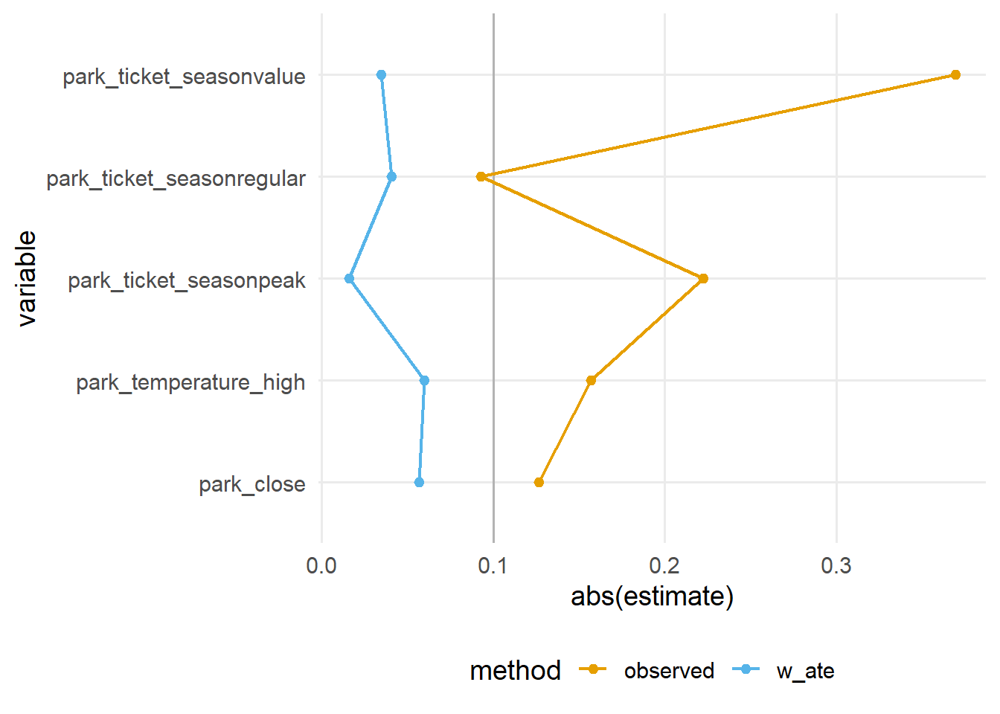
另一方面，方差比的改善并不明显；虽然大多数比值都向 1 减小，但有一个略有变差，仍有几个不接近 1，如 图 63.6 所示。
ggplot(
data = vrs,
aes(
x = estimate,
y = variable,
group = method,
color = method
)
) +
geom_love(vline_xintercept = 1)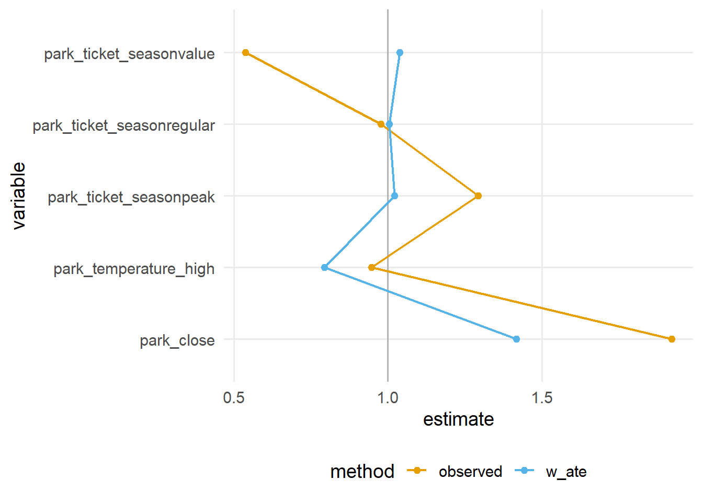
plot_balance() 是一个辅助函数，可以快速绘制 check_balance() 的输出，便于迭代调整，如 图 63.7 所示。
balance_metrics |>
filter(metric %in% c("smd", "vr")) |>
plot_balance(facet_scales = "free_x")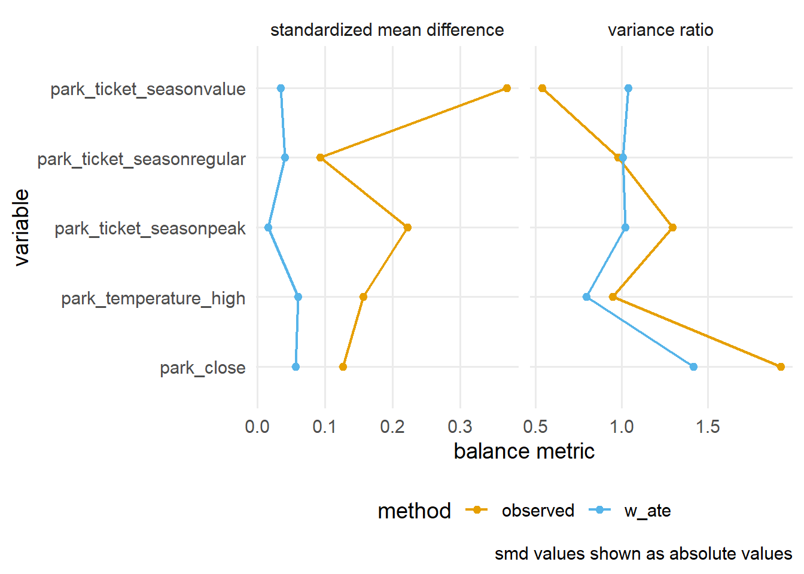
plot_balance() helper function.
如上所述，标准化均值差的一个问题是，对于连续混杂因子，它只量化单个点（均值）处的平衡。 将整个分布可视化有助于确保尾部没有残余不平衡。 我们先使用箱线图。 例如，使用 park_temperature_high 变量。 绘制箱线图时，我们总是将点抖动后叠加在图上，以避免遮挡和数据异常；我们使用 geom_jitter() 来实现这一点。 首先绘制未加权箱线图。 在 图 63.8 中，我们看到分布中部存在不平衡，分布两端也有差异，尤其是在较低温度处。 SMD 无法告诉我们这种情况是否得到改善。
ggplot(
seven_dwarfs_9_with_wt,
aes(
x = factor(park_extra_magic_morning),
y = park_temperature_high,
color = park_extra_magic_morning
)
) +
geom_jitter(width = 0.12, height = 0, alpha = 0.5) +
geom_boxplot(
outlier.color = NA,
fill = NA,
width = 0.3,
color = "black"
) +
labs(
color = "Extra magic morning",
y = "Historic temperature high",
x = NULL
)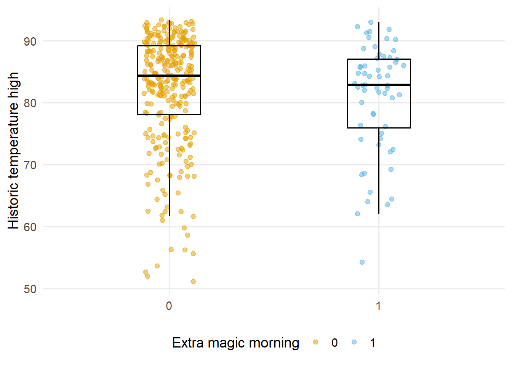
现在来看加权版本。 在 图 63.9 中，我们看到了 SMD 所检测到的分布中部的改善。 分布的尾部虽然有所改善，但仍显示出一些不平衡。
ggplot(
seven_dwarfs_9_with_wt,
aes(
x = factor(park_extra_magic_morning),
y = park_temperature_high,
color = park_extra_magic_morning,
weight = w_ate
)
) +
geom_jitter(width = 0.12, height = 0, alpha = 0.5) +
geom_boxplot(
outlier.color = NA,
fill = NA,
width = 0.3,
color = "black"
) +
labs(
color = "Extra magic morning",
y = "Historic temperature high",
x = NULL
)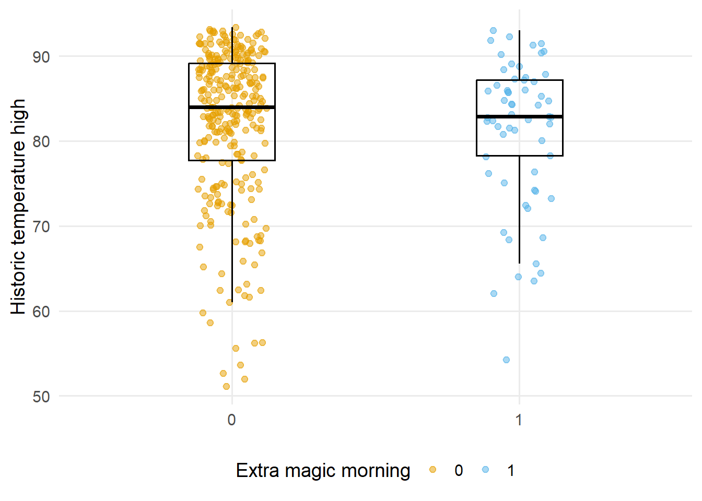
ggplot2 中的许多其他几何对象都接受 weight 参数，这对于可视化加权总体很有用。 充分运用探索性数据分析技能，把加权后的伪总体当作真实样本来处理！
geom_bar()geom_boxplot()geom_contour()geom_count()geom_density()geom_dotplot()geom_freqpoly()geom_hex()geom_histogram()geom_quantile()geom_smooth()geom_violin()按各暴露组分层查看混杂因子的经验累积分布函数（eCDF）也非常有用。 可以使用 halfmoon 的 geom_ecdf() 将未加权 eCDF 可视化。 在平衡的总体中，我们期望各组的线条在混杂因子的整个分布范围内重叠。 图 63.10 显示，历史最高温度的大部分分布范围内，暴露组之间存在不平衡。
ggplot(
seven_dwarfs_9_with_wt,
aes(
x = park_temperature_high,
color = factor(park_extra_magic_morning)
)
) +
geom_ecdf() +
labs(
x = "Historic temperature high",
y = "Proportion <= x",
color = "Extra Magic Morning"
)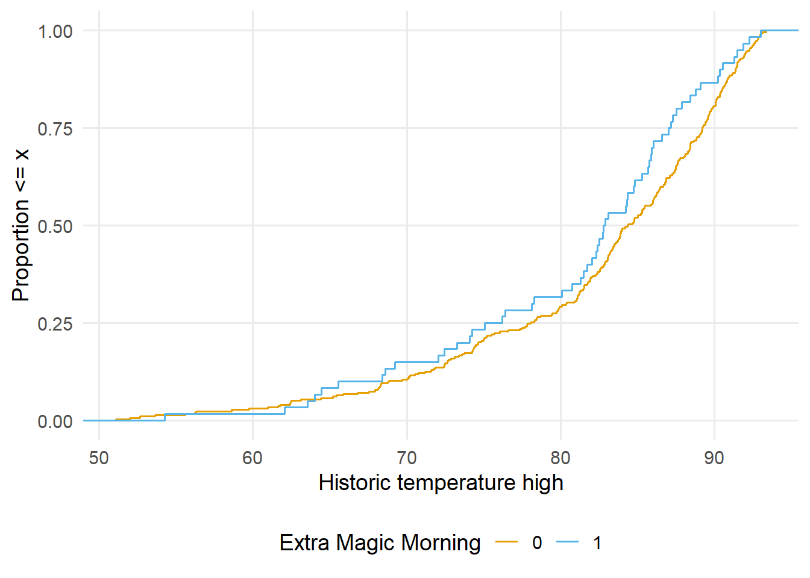
geom_ecdf() 还支持额外的 weight 参数，用于展示加权 eCDF 图。
ggplot(
seven_dwarfs_9_with_wt,
aes(
x = park_temperature_high,
color = factor(park_extra_magic_morning)
)
) +
geom_ecdf(aes(weights = w_ate)) +
labs(
x = "Historic temperature high",
y = "Proportion <= x",
color = "Extra Magic Morning"
)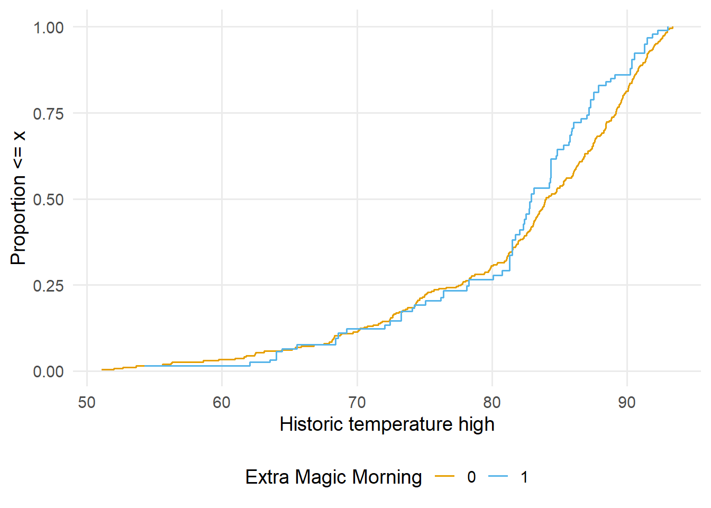
查看 图 63.11 可以发现几件事。 首先，与 图 63.10 相比，两个分布的重叠更多。 在 图 63.10 中，橙色线几乎总是明显高于蓝色线；而在 图 63.11 中，两条线在略高于 80 度之前看起来是重叠的。 超过 80 度后，加权图中的两条线似乎开始分离。 因此，查看完整分布而不是单个汇总指标会很有帮助。 例如，如果只使用标准化均值差，我们可能会说这两组是平衡的，然后继续进行。 查看 图 63.11 提示，拥有额外魔法早晨的概率与历史最高温度之间可能存在非线性关系。 让我们使用自然样条重新拟合倾向评分模型。 可以使用 splines::ns() 函数。
自然样条也称为限制性三次样条，是一种平滑函数，允许我们对变量之间的非线性关系建模。 与多项式项（如 \(x^2\) 或 \(x^3\)）不同，多项式项在数据边界处可能变得极端；自然样条会将边界结点之外的函数约束为线性。
seven_dwarfs_9_with_ps <-
glm(
park_extra_magic_morning ~ park_ticket_season +
park_close +
# refit model with a spline
splines::ns(park_temperature_high, df = 5),
data = seven_dwarfs_9,
family = binomial()
) |>
augment(type.predict = "response", data = seven_dwarfs_9)
seven_dwarfs_9_with_wt <- seven_dwarfs_9_with_ps |>
mutate(w_ate = wt_ate(.fitted, park_extra_magic_morning))现在来看看这会如何影响加权 eCDF 图。
ggplot(
seven_dwarfs_9_with_wt,
aes(
x = park_temperature_high,
color = factor(park_extra_magic_morning)
)
) +
geom_ecdf(aes(weights = w_ate)) +
labs(
color = "Extra Magic Morning",
x = "Historic temperature high",
y = "Proportion <= x"
)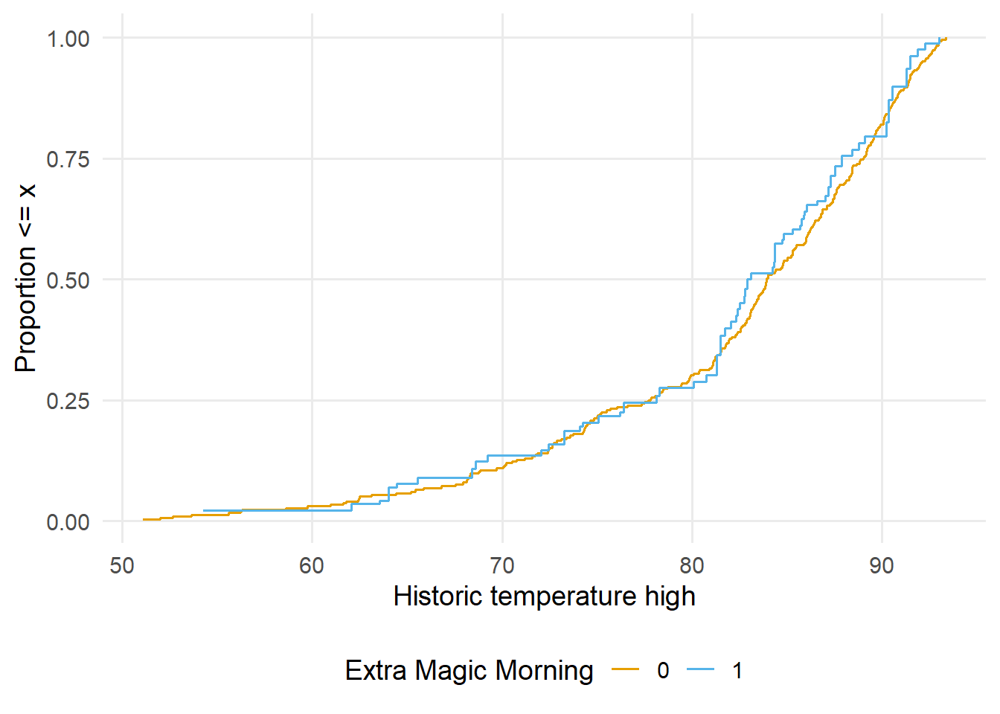
现在在 图 63.12 中，两条线在整个范围内看起来重叠得更好。
eCDF 的一个单值汇总指标是 Kolmogorov-Smirnov（KS）统计量1。 KS 统计量是两条 eCDF 曲线之间的最大垂直距离。 我们可以使用 check_balance() 计算它：
balance_metrics |>
filter(metric == "ks")# A tibble: 10 x 5
variable group_level method metric estimate
<chr> <chr> <chr> <chr> <dbl>
1 park_close 0 obser~ ks 0.171
2 park_close 0 w_ate ks 0.139
3 park_temperature~ 0 obser~ ks 0.151
4 park_temperature~ 0 w_ate ks 0.148
5 park_ticket_seas~ 0 obser~ ks 0.0959
6 park_ticket_seas~ 0 w_ate ks 0.00682
7 park_ticket_seas~ 0 obser~ ks 0.0459
8 park_ticket_seas~ 0 w_ate ks 0.0201
9 park_ticket_seas~ 0 obser~ ks 0.142
10 park_ticket_seas~ 0 w_ate ks 0.0133 为了更好地理解 KS 统计量所表示的含义，让我们在未加权和加权 eCDF 图上将其可视化。 图 63.13 显示了两条曲线之间的最大距离：用红线连接该最大距离出现位置的两个点。 注意，加权前后的 KS 统计量对应的并不是分布中的同一组点；加权后，最大垂直距离变小了，位置也更靠近分布中心。
# Calculate unweighted ECDFs
ecdf_0 <- seven_dwarfs_9_with_wt |>
filter(park_extra_magic_morning == 0) |>
pull(park_temperature_high) |>
ecdf()
ecdf_1 <- seven_dwarfs_9_with_wt |>
filter(park_extra_magic_morning == 1) |>
pull(park_temperature_high) |>
ecdf()
# Find unweighted KS point
all_temps <- sort(unique(seven_dwarfs_9_with_wt$park_temperature_high))
distances <- abs(ecdf_0(all_temps) - ecdf_1(all_temps))
max_idx <- which.max(distances)
ks_unweighted <- tibble(
x = all_temps[max_idx],
y0 = ecdf_0(all_temps[max_idx]),
y1 = ecdf_1(all_temps[max_idx]),
ks = distances[max_idx],
weight_status = "Unweighted"
)
# Calculate weighted ECDFs manually
wt_data_0 <- seven_dwarfs_9_with_wt |>
filter(park_extra_magic_morning == 0) |>
arrange(park_temperature_high)
wt_data_1 <- seven_dwarfs_9_with_wt |>
filter(park_extra_magic_morning == 1) |>
arrange(park_temperature_high)
# For each unique temp value, calculate weighted cumulative proportion
wecdf_0 <- tibble(temp = all_temps) |>
mutate(
ecdf_val = map_dbl(temp, \(t) {
sum(wt_data_0$w_ate[wt_data_0$park_temperature_high <= t]) /
sum(wt_data_0$w_ate)
})
)
wecdf_1 <- tibble(temp = all_temps) |>
mutate(
ecdf_val = map_dbl(temp, \(t) {
sum(wt_data_1$w_ate[wt_data_1$park_temperature_high <= t]) /
sum(wt_data_1$w_ate)
})
)
# Find weighted KS point
wt_distances <- abs(wecdf_0$ecdf_val - wecdf_1$ecdf_val)
wt_max_idx <- which.max(wt_distances)
ks_weighted <- tibble(
x = all_temps[wt_max_idx],
y0 = wecdf_0$ecdf_val[wt_max_idx],
y1 = wecdf_1$ecdf_val[wt_max_idx],
ks = wt_distances[wt_max_idx],
weight_status = "Weighted"
)
ks_both <- bind_rows(ks_unweighted, ks_weighted) |>
mutate(
weight_status = factor(weight_status, levels = c("Unweighted", "Weighted"))
)
plot_data <- seven_dwarfs_9_with_wt |>
select(park_temperature_high, park_extra_magic_morning, w_ate) |>
mutate(
Unweighted = 1,
Weighted = as.numeric(w_ate)
) |>
pivot_longer(
cols = c(Unweighted, Weighted),
names_to = "weight_status",
values_to = "weight"
) |>
mutate(
weight_status = factor(weight_status, levels = c("Unweighted", "Weighted"))
)
ggplot(
plot_data,
aes(
x = park_temperature_high,
color = factor(park_extra_magic_morning),
weight = weight
)
) +
geom_ecdf(linewidth = 1, alpha = 0.5) +
geom_segment(
data = ks_both,
aes(x = x, xend = x, y = y0, yend = y1),
color = "#DB5461",
linewidth = 0.8,
linetype = "solid",
inherit.aes = FALSE
) +
geom_point(
data = ks_both,
aes(x = x, y = y0),
color = "#DB5461",
size = 2,
inherit.aes = FALSE
) +
geom_point(
data = ks_both,
aes(x = x, y = y1),
color = "#DB5461",
size = 2,
inherit.aes = FALSE
) +
geom_label(
data = ks_both,
aes(
x = x,
y = (y0 + y1) / 2,
label = paste0("KS = ", round(ks, 3))
),
color = "#DB5461",
size = 3.5,
fontface = "bold",
hjust = 1.1,
inherit.aes = FALSE
) +
facet_wrap(~weight_status) +
labs(
x = "Historic temperature high",
y = "Proportion <= x",
color = "Extra Magic Morning"
) +
theme(legend.position = "bottom")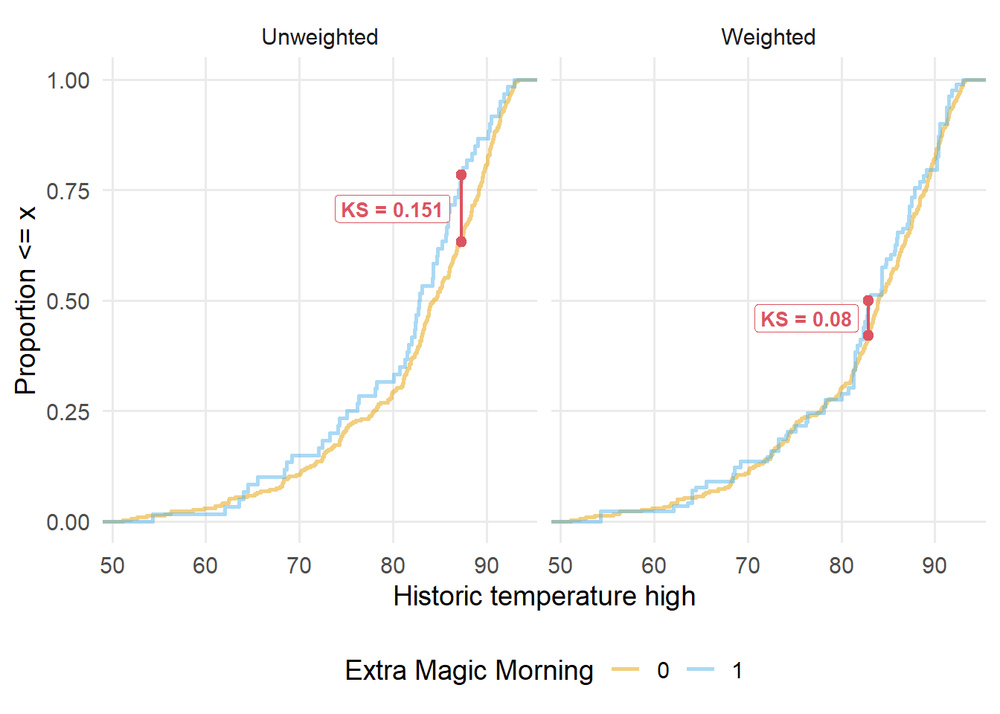
加权或匹配后，我们希望 KS 统计量尽可能接近 0，这表示两个分布在整个范围内都具有良好的重叠。
eCDF 让我们能够观察连续混杂因子的整个分布，SMD 和方差比则从不同角度提供关于其各阶矩的信息。 然而，要满足可交换性，我们需要混杂因子联合分布上的平衡。 这意味着在整个多维协变量空间内保持平衡，包括变量之间的交互作用。 对于复杂数据，这很难理解，更不用说评估了，但我们可以尝试几种工具。
评估联合分布平衡程度的最简单方法，是计算代表其组成部分的单个变量。 SMD 及类似指标在变量的原始尺度上考察单个变量，这是观察联合分布的一个角度。 人们还经常考察交互项和连续混杂因子的平方（这与方差密切相关，因为方差是分布的二阶矩，所以我们已经通过方差比从一个角度考察过它）。 check_balance() 可以自动完成这些计算（也包括立方项）。
balance_metrics_joint <-
seven_dwarfs_9_with_wt |>
mutate(park_close = as.numeric(park_close)) |>
check_balance(
.vars = c(park_ticket_season, park_close, park_temperature_high),
.exposure = park_extra_magic_morning,
.weights = w_ate,
interactions = TRUE,
squares = TRUE
)
balance_metrics_joint |>
filter(metric %in% c("smd", "vr")) |>
plot_balance(facet_scales = "free_x") +
theme(axis.title.y = element_blank())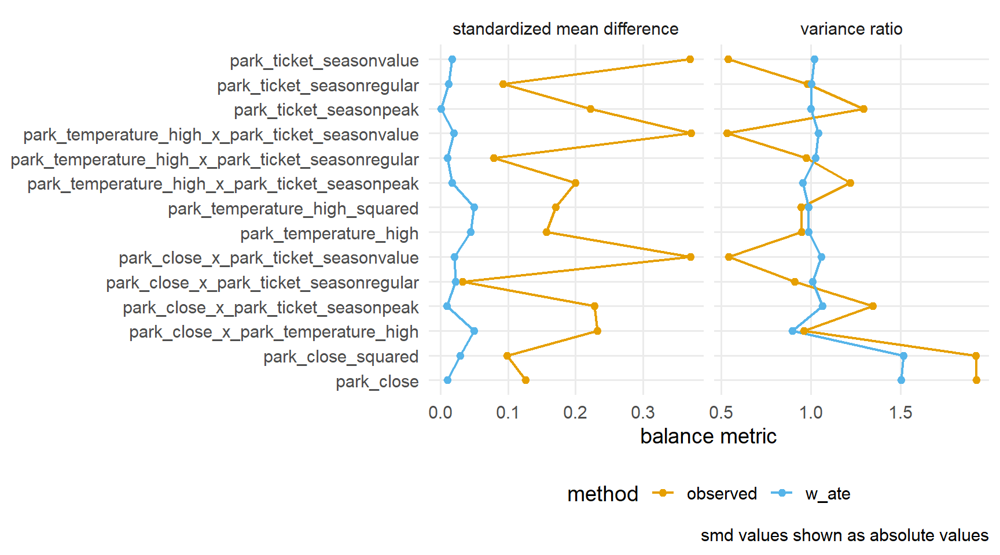
从这个角度看，在我们计算出的联合分布子集上，平衡程度尚可。
另一种平衡度量是能量统计量。 能量统计量是联合经验累积分布函数之间距离的平均值。 能量统计量不像考察许多派生变量上的多个度量那样，而是用一个数概括联合分布。 与我们看到的其他一些指标不同，能量指标的尺度取决于协变量的数量及其分布，因此更适合比较不同方法。 不过，能量越低表示协变量空间中的平衡越好；加权后，我们看到的能量远低于观测样本中的能量。
balance_metrics_joint |>
filter(metric == "energy") |>
select(method, estimate)# A tibble: 2 x 2
method estimate
<chr> <dbl>
1 observed 0.241
2 w_ate 0.0434当初始倾向评分模型未能实现良好平衡时，可以加入更复杂的项来改进它，例如预测变量之间的多项式函数和交互作用，正如 图 63.12 中所示。
让我们在此基础上进一步修改，创建一个包含非线性项和交互作用、更加灵活的倾向评分模型：
ps_improved_model <- glm(
park_extra_magic_morning ~
park_ticket_season +
park_close +
park_temperature_high +
splines::ns(park_temperature_high, df = 5) +
I(as.numeric(park_close)^2) +
park_ticket_season:park_close +
park_ticket_season:park_temperature_high +
park_close:park_temperature_high,
data = seven_dwarfs_9,
family = binomial()
)
seven_dwarfs_9_with_improved <- seven_dwarfs_9_with_wt |>
mutate(
.fitted_improved = predict(ps_improved_model, type = "response"),
w_ate_improved = wt_ate(.fitted_improved, park_extra_magic_morning)
)现在，让我们同时使用原始模型和改进模型检查平衡：
balance_comparison <- seven_dwarfs_9_with_improved |>
mutate(park_close = as.numeric(park_close)) |>
check_balance(
.vars = c(park_ticket_season, park_close, park_temperature_high),
.exposure = park_extra_magic_morning,
.weights = c(w_ate, w_ate_improved),
squares = TRUE,
interactions = TRUE
)
balance_comparison |>
plot_balance() +
theme(axis.text.y = element_blank())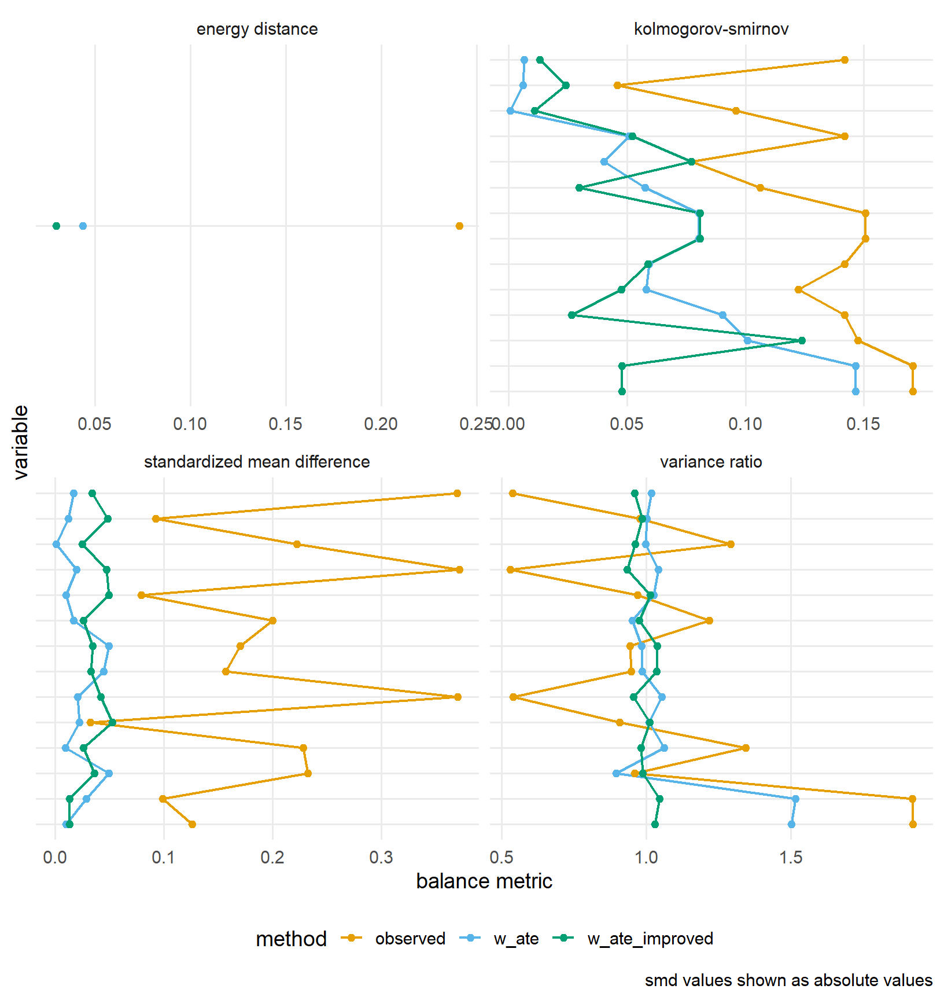
图中显示，特征工程带来的结果不一。 不过，改进后的权重（w_ate_improved）实现了比原始权重（w_ate）更低的能量。
我们还比较一下有效样本量：
seven_dwarfs_9_with_improved |>
summarize(
n = n(),
ess_ate_original = ess(w_ate),
ess_ate_improved = ess(w_ate_improved),
percent_ess_original = percent(ess_ate_original / n),
percent_ess_improved = percent(ess_ate_improved / n)
)# A tibble: 1 x 5
n ess_ate_original ess_ate_improved
<int> <dbl> <dbl>
1 354 160. 144.
# i 2 more variables: percent_ess_original <chr>,
# percent_ess_improved <chr>改进模型实现了略好的平衡，但代价可能是由于权重更加极端而导致有效样本量降低。 这是倾向评分分析中常见的权衡：更好的平衡通常需要变异性更大的权重，从而降低统计效率。
到目前为止，我们一直关注倾向评分权重：先对处理分配机制建模，再使用这些概率的倒数创建权重。 另一种方法是直接优化权重，在不明确建立倾向评分模型的情况下实现平衡。 {optweight} 包实现了这种方法：它通过求解一个约束优化问题，在确保协变量的平衡程度处于指定容差范围内的同时，寻找能够使变异性最小（即有效样本量最大）的权重。 这种方法有两个主要优点。 第一，由于基于优化的权重直接针对平衡统计量，我们可以减少在估计权重和检查平衡之间反复迭代的需要。 第二，optweight 实现的这类基于优化的权重称为稳定平衡权重，通常能够达到与良好倾向评分模型相当的平衡，同时提供更大的有效样本量。
让我们使用 optweight() 函数估计稳定平衡权重。 除了指定一个与倾向评分模型类似的公式外，我们还要指定平衡统计量的容差 tols 和允许的最小权重 min.w。 将 min.w = 0，意味着允许 optweight() 分配零权重，从而有效地将部分观测排除在外。
library(optweight)
opt_weights <- optweight(
park_extra_magic_morning ~
park_ticket_season + park_close + park_temperature_high,
data = seven_dwarfs_9,
estimand = "ATE",
tols = 0.01,
min.w = 0
)
seven_dwarfs_9_with_opt <- seven_dwarfs_9_with_wt |>
mutate(w_opt = opt_weights$weights)让我们检查这些基于优化的权重所实现的平衡，并将其与倾向评分权重进行比较：
balance_opt_comparison <- seven_dwarfs_9_with_opt |>
mutate(park_close = as.numeric(park_close)) |>
check_balance(
.vars = c(park_ticket_season, park_close, park_temperature_high),
.exposure = park_extra_magic_morning,
.weights = c(w_ate, w_opt)
)
balance_opt_comparison |>
plot_balance() +
theme(axis.title.y = element_blank())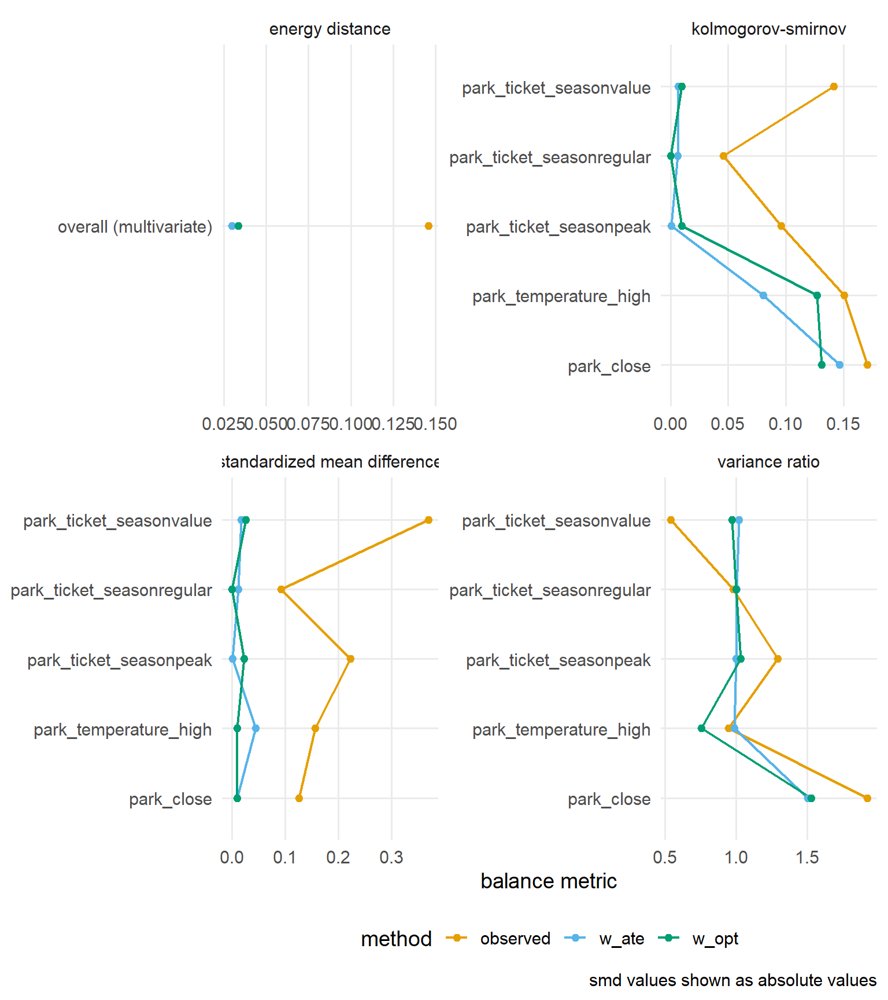
两种方法实现的平衡程度相近。 现在再比较两种方法的权重分布：
seven_dwarfs_9_with_opt |>
select(w_ate, w_opt) |>
mutate(w_ate = as.numeric(w_ate)) |>
pivot_longer(everything(), names_to = "method", values_to = "weight") |>
group_by(method) |>
reframe(range = range(weight))# A tibble: 4 x 2
method range
<chr> <dbl>
1 w_ate 1.03
2 w_ate 16.1
3 w_opt 0
4 w_opt 2.32稳定平衡权重的取值范围比倾向评分权重小得多。 我们还看到，确实有一天获得了 0 权重，因此被从分析中排除。
seven_dwarfs_9_with_opt |>
filter(w_opt == 0) |>
select(park_date, park_extra_magic_morning)# A tibble: 1 x 2
park_date park_extra_magic_morning
<date> <dbl>
1 2018-12-21 1最后，让我们比较两种加权方法的有效样本量：
seven_dwarfs_9_with_opt |>
summarize(
n = n(),
ess_ate = ess(w_ate),
ess_opt = ess(w_opt),
percent_ess_ate = percent(ess_ate / n),
percent_ess_opt = percent(ess_opt / n)
)# A tibble: 1 x 5
n ess_ate ess_opt percent_ess_ate percent_ess_opt
<int> <dbl> <dbl> <chr> <chr>
1 354 160. 341. 45% 96% 这类基于优化的权重通常能产生更大的有效样本量，因为在满足指定平衡约束的同时，它们直接将权重变异性降至最低。 更大的有效样本量可以使结局模型中的估计值更加精确。
基于优化的权重是一种通用技术，可以针对平衡的许多方面。 例如，我们可能希望针对能量统计量来平衡协变量的联合分布。 {WeightIt} 包实现了这种方法以及许多其他基于优化的方法。 让我们估计能量平衡权重。
library(WeightIt)
energy_weights <- weightit(
park_extra_magic_morning ~
park_ticket_season + park_close + park_temperature_high,
data = seven_dwarfs_9,
method = "energy",
estimand = "ATE"
)
seven_dwarfs_9_with_all <- seven_dwarfs_9_with_opt |>
mutate(w_energy = energy_weights$weights)让我们比较三种方法实现的平衡：
# Check balance with all three sets of weights
balance_all_comparison <- seven_dwarfs_9_with_all |>
mutate(park_close = as.numeric(park_close)) |>
check_balance(
.vars = c(park_ticket_season, park_close, park_temperature_high),
.exposure = park_extra_magic_morning,
.weights = c(w_ate, w_opt, w_energy)
)
balance_all_comparison |>
filter(metric == "smd") |>
plot_balance()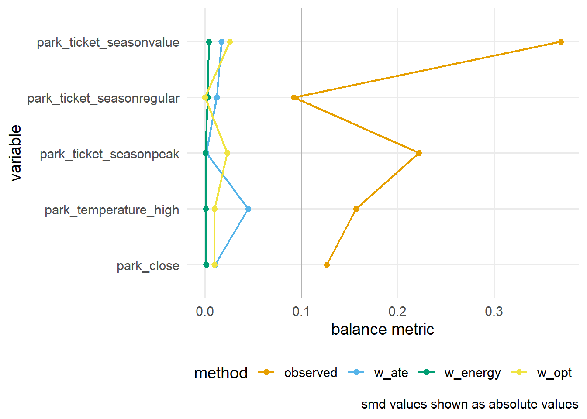
能量平衡权重带来了极佳的平衡，但其有效样本量较低。
seven_dwarfs_9_with_all |>
summarize(
ess_energy = ess(w_energy),
percent_ess_energy = percent(ess_energy / n())
)# A tibble: 1 x 2
ess_energy percent_ess_energy
<dbl> <chr>
1 150. 42% 既然我们考察的是组间分布差异，一个自然的问题是：p 值呢？ 我们经常使用 p 值来评估两个组的分布是否存在统计学显著差异。 然而，对于平衡而言，p 值并不合适 (Imai, King, 和 Stuart 2008)。 第一，p 值针对的是我们从中抽取样本的假设总体；而平衡是样本的属性。 第二，p 值高度依赖样本量。 如果评估平衡时得到一个较小的 p 值，我们可以随机删除观测，直到样本量不足以检测出差异，从而使 p 值增大。 当然，这样做并不能使组间达到平衡！ 因此，如果使用 p 值评价平衡，最终会由于精度下降而得到一个不显著的结果。 最后，p 值的截断值与平衡之间一开始就没有明确的关系。 我们没有理论依据认为 p 值为 < 0.05 就比其他截断值表示更好的平衡。
总的来说，通常用于构建预测模型的指标并不适合用于构建因果模型。 研究人员和数据科学家经常使用 R2、AUC 和准确率等指标来决定模型。 然而，因果模型的目标不是尽可能多地预测结局 (Hernán 和 Robins 2021)；目标是准确估计暴露与结局之间的关系。 因果模型不必具有特别好的预测能力才能做到无偏。
不过，这些指标可能有助于识别模型最佳的函数形式。 通常，我们会使用 DAG 和领域知识来构建模型本身。 但是，我们可能不确定混杂因子与结局或暴露之间的数学关系。例如，我们可能不知道这种关系是否是线性的。 错误设定这种关系可能导致残余混杂：我们可能只能部分控制相关混杂因子，使估计值中仍然存在一些偏倚。 使用以预测为重点的指标检验不同的函数形式，可以提高模型的准确性，从而可能实现更好的控制。
在预测建模中，数据科学家经常需要防止模型对数据中的偶然模式过拟合。 当模型捕捉到这些偶然模式时，它在其他数据集上的表现就不会那么好。 那么，因果模型会过拟合吗？
简短的答案是会，不过相比逻辑回归及类似方法，机器学习更容易出现这种情况。 过拟合模型本质上是一个错误设定的模型 (Gelman 2017)。 错误设定的模型会导致残余混杂，从而导致因果效应有偏。 过拟合还会加剧随机性正值性违反 (Zivich, Cole, 和 Westreich 2022)。 正确的因果模型（其函数形式与数据生成机制相匹配）不可能过拟合。 正确的预测模型也是如此。
不过，这个答案有一些细微之处。 因果推断中的过拟合与预测中的过拟合有所不同；我们并不是要把因果估计应用于另一个数据集（最接近这种情形的是可迁移性和可推广性，这是我们将在 ?sec-evidence 中讨论的问题）。 因果模型仍然不需要具有特别好的预测能力才能做到无偏。
在预测建模中，人们经常使用偏倚—方差权衡来改善样本外预测。 简言之，在样本中引入一些偏倚，以降低模型方差并改善样本外预测。 不过，我们必须谨慎：这里的 bias 指的是模型估计值与数据集内因变量真实值之间的差异。 我们把它称为统计偏倚。 它不一定等同于模型估计值与总体中真实因果效应之间的差异。 我们把后者称为因果偏倚。 如果将偏倚—方差权衡应用于因果模型，就会引入统计偏倚来降低因果偏倚。 另一个细微之处是，过拟合可能使样本中的估计值标准误增大，这与偏倚—方差权衡中的方差并不是一回事 (Schuster, Lowe, 和 Platt 2016)。 从频率学派的角度看，置信区间也不会具有名义覆盖率（见 ?sec-appendix-bootstrap），因为估计值中存在因果偏倚。
在实践中，交叉验证是一种减少过拟合的技术，常用于采用机器学习的因果模型，正如我们将在 ?sec-causal-ml 中讨论的那样。
倾向评分匹配有一个特点：在已经实现良好平衡后，如果继续删减匹配对，就会看到相反的效果：不平衡程度增加。 这是因为，在倾向评分匹配中，实现平衡后，从删减角度看没有充分理由偏好某一个匹配对；删减会变成随机的。 问题在于，我们更可能删除匹配良好的配对，而不是维持平衡。
在 图 63.16 中可以看到，随着我们收紧卡钳（匹配对数量减少），平衡先得到改善；随后，当卡钳接近零时，平衡反而变差。
library(MatchIt)
caliper_widths <- c(0.25, 0.1, 0.05, 0.025, 0.01)
check_balance_by_cal <- function(caliper) {
match_obj <- matchit(
park_extra_magic_morning ~
park_ticket_season + park_close + park_temperature_high,
data = seven_dwarfs_9,
method = "nearest",
caliper = caliper,
distance = "glm"
)
matched_data <- match.data(match_obj)
balance <- matched_data |>
mutate(park_close = as.numeric(park_close)) |>
check_balance(
.vars = c(park_ticket_season, park_close, park_temperature_high),
.exposure = park_extra_magic_morning
)
balance |>
filter(metric == "smd") |>
mutate(
caliper = caliper,
n_matched = nrow(matched_data)
)
}
balance_by_caliper <- map(caliper_widths, check_balance_by_cal) |>
bind_rows()
ggplot(
balance_by_caliper,
aes(x = caliper, y = abs(estimate), color = variable)
) +
geom_line() +
geom_point() +
scale_x_reverse() +
labs(
x = "caliper",
y = "smd"
) +
theme(legend.position = "right")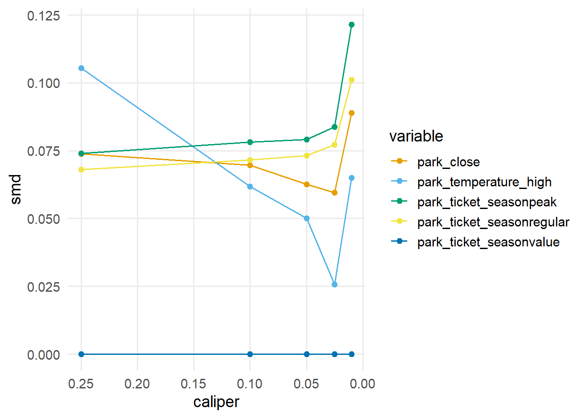
在实践中，倾向评分悖论并没有那么严重，原因有两个：第一，对于许多数据集，在开始遇到悖论之前，删减匹配就会改善平衡。 第二，如果我们开始发现卡钳过于严格并且正在使平衡恶化，只需使用限制较少的卡钳即可。 话虽如此，其他一些匹配算法，例如粗化精确匹配和马氏距离匹配（两者都可在 MatchIt 中使用），并不会遇到这个问题；如果你遇到了这个悖论，却认为需要继续删减匹配，那么可以考虑这些方法。
KS 统计量也是双样本 Kolmogorov-Smirnov 检验的检验统计量，该检验用于判断两个样本是否来自同一分布。 然而，在平衡评估的语境下，我们关注的是统计量的大小，而不是假设检验。↩︎